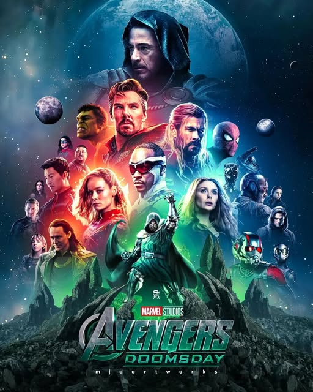
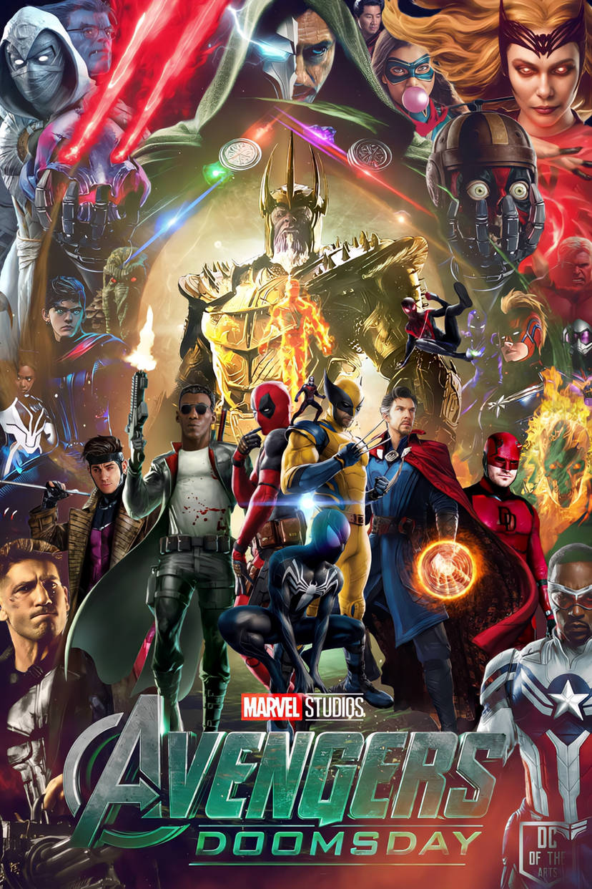
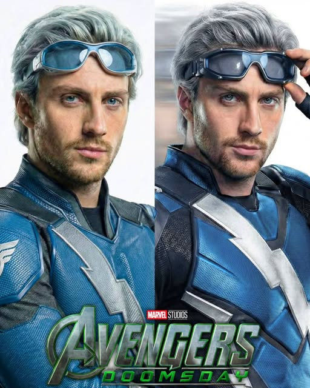

Avengers: Domsday es una proxima pelicula de superheroes estadounidense de 2026 basada en el equipo de superheroes de marvel comics, los vengadoresproducida por marvel studios y distribuida por Walt Disney Studios Motion Pictures. esta destinada a ser la quita pelicula de la hexalogia de avengers despues de Avengers: Endgame (2019) y la pelicula numero 39 del universo cinematografico de marvel (UCM) dirigida por anthony y joe russo y escrita por michael waldron y stephen mcfeely. la pelicula cuenta con reparto coral liderado por robert downey jr como doctor doom en la pelicula los vengadores wakandianos los cuatro fantasticos los nuevos vengadores y los x-men convergen desde diferentes universos para enfrentarse a doom




el rodaje principal de avengers: doomsday se llevo a cabo entre abril y septiemvr de 2025 en los pinewood studios de inglaterra y locaciones en barein bajo la direccion de los hermanos russo con su estreno programado para el 18 de diciembre de 2026
todos tienen vidas rodadas--pero no todos tienen un destino